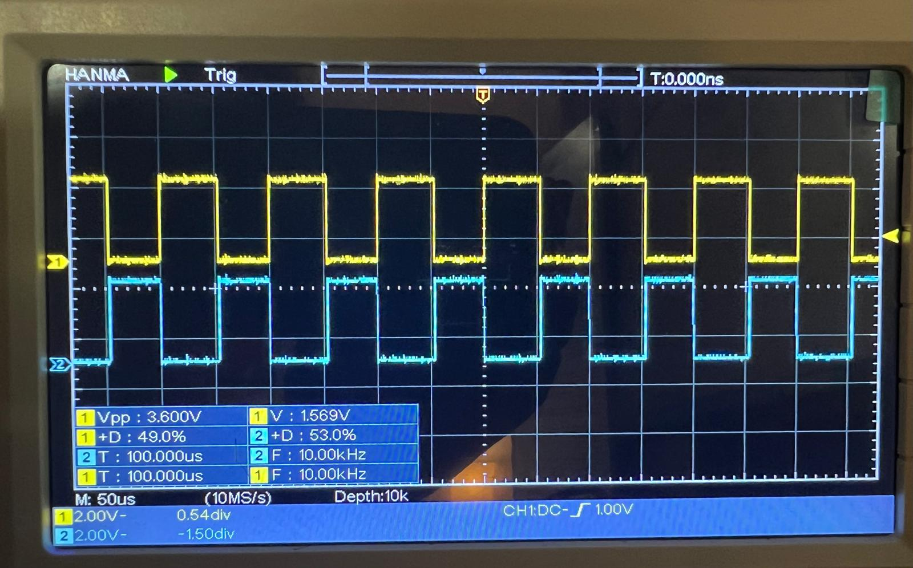

PMSM Field Oriented Control
Currently implementing Field Oriented Control (FOC) for a Permanent Magnet Synchronous Motor (PMSM) using the TI C2000 LaunchPad (F28379D) along with a 3-phase GaN inverter (BOOSTXL-3PhGaNInv). This project utilizes:
- TI's Fast Current Loop (FCL) library to enhance current loop bandwidth and overall control performance.
- Software Frequency Response Analyzer (SFRA) library for detailed system analysis.
Key Features and Progress:
- Successful initialization and verification of PWM signal generation.
- Implementation of space vector modulation (SVM) to drive the 3-phase inverter.
- Accurate DC bus voltage measurement calibration, ensuring proper scaling and ADC readings.
- Currently in the initial build levels, focusing on system initialization, PWM verification, and DC bus voltage calibration.
Hardware Used:
- TI LaunchPad Development Kit (LAUNCHXL-F28379D)
- 3-phase GaN inverter (BOOSTXL-3PhGaNInv)
- Teknic Motor M-2310P-LN-04K
- 48V DC Power Supply

Overview of the hardware setup, including the TI LaunchPad, 3-phase GaN inverter, and power supply.
Oscilloscope captures of the PWM signals (EPWM1A & B - High and Low witches for Motor Phase A - note their complementary nature), demonstrating the correct generation of PWM waveforms.
Oscilloscope captures of the equivalent DAC signals resulting from the PWM signals shown above (for Motor Phase A & Phase B - note the expected 120-degree phase difference between each phase).
Next Steps:
- Proceed to open-loop motor control and QEP feedback verification.
- Implement and tune the current and speed control loops.
- Conduct frequency response analysis using the SFRA tool to optimize system performance.
Technologies Used: TI C2000 LaunchPad, 3-phase GaN inverter, FOC, FCL Library, SFRA Library, PWM, Motor Control
Project Type: Personal Project (Building upon knowledge from University of Michigan EECS 419)
Back to Projects